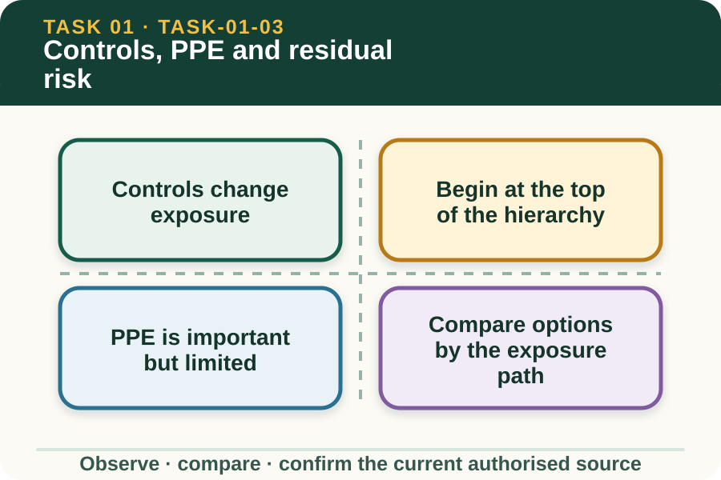

Learning purpose
Compare controls using the hierarchy and explain why PPE is not the first or only control.
Task 1 · Lesson 3 of 4
Compare controls using the hierarchy and explain why PPE is not the first or only control.
Learning purpose
Compare controls using the hierarchy and explain why PPE is not the first or only control.
Success criteria
Learning boundary
Supplementary learning and formative practice only. Current RTO assessment, local procedures and authorised supervision control real work.

A control is an action or condition intended to eliminate a hazard or reduce the chance or consequence of harm. Strong control reasoning explains how exposure changes, rather than simply naming a familiar safety item.
The workplace's authorised risk process selects and approves real controls. A learner can compare options and notice failures, but should not redesign plant, alter a procedure or substitute equipment without permission.
Elimination removes the hazard from the task. If that is not reasonably practicable, the hierarchy moves through substitution, isolation and engineering controls before relying mainly on administrative controls and personal protective equipment.
Higher-level controls generally reduce dependence on each person's perfect behaviour. More than one control may be needed because farm tasks often combine people, plant, animals, terrain and weather.
PPE creates a barrier for the individual wearer when it is suitable, correctly fitted, used, maintained and stored. It does not remove a moving vehicle, unstable surface, noise source or chemical from the work environment.
PPE should therefore sit inside a broader control system. The task-specific PPE and its use come from the current workplace procedure, label, manufacturer information and supervisor direction, not from a general website example.
To compare controls, ask where the hazard originates, how a person could be exposed and which option interrupts that path most reliably. A sign may remind people, while physical separation may prevent people and moving plant from sharing the same space.
Cost or convenience alone does not decide the answer. The authorised decision considers what is reasonably practicable, the seriousness of possible harm and whether the control introduces another hazard.
Fictional worked example
Observed evidence: A fictional store entrance opens directly into a shared vehicle area. Decision and reason: A reminder sign alone still depends on every person seeing and following it. Safe action: The learner reports the interaction and compares higher-level separation with administrative reminders for the supervisor's review. Result: The workplace selects an authorised combination that changes access and communication. Next check or record: The learner observes whether people and vehicles remain separated and reports any control failure.
Residual risk is the risk left after controls are applied. It matters because a control can be incomplete, used incorrectly, damaged, bypassed or weakened by changing conditions.
Monitoring asks whether the control is present, operating as intended and still suitable for the task. If the remaining risk is outside the learner's authority or the control has failed, the task pauses for authorised review.
A useful control note links the option to the hazard and exposure path. 'Barrier separates pedestrians from the reversing area' explains more than 'put up barrier' because it states the intended effect.
The note should also identify the next check: what observable sign would show the control is missing, ineffective or affected by a change. This supports review without claiming that a classroom choice has approved a workplace control.

External media loads only after you choose it.
Source-linked video
Why watch: Connect the hierarchy of control to the question of what risk remains after a control is chosen.
Watch for: Which control acts furthest from the person, and what risk could remain after it is applied?
Formative practice
Each option explains the consequence. These answers save only on this device.
Written application
Apply and keep a learning record
For a fictional teacher-provided hazard, compare one higher-level and one lower-level control. Explain the intended effect and one sign that review is needed. Do not prescribe local PPE or alter equipment.
Learning record: A supplementary-learning comparison that justifies control strength and identifies residual risk.
Lesson responses and the activity are formative learning only. Formal sufficiency and competence remain with the current RTO process.
Source basis: AHCWHS202 Release 1 and SafeWork NSW First Steps to Farm Safety hierarchy-of-control and review guidance. The workplace risk process, procedures and supervisor approve real controls and PPE.